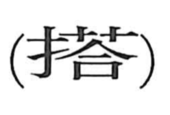

搭

Kun: noseru, noru, kakeru | On: tou
to load ・ to carry ・ to take on board ・ to board
Explanation
A phono-semantic compound built with the hand radical, signaling a hand-led action, and the phonetic element 答, which supplies the on reading tō. Although not attested in early inscriptions, its sense is vividly shown in Lin Bu’s poem with the line 肩搭道衣歸, picturing someone returning with a mendicant’s robe lifted and set over the shoulder by hand. From this core gesture of placing or setting something in position, the character came to mean loading or taking people and goods aboard, and by extension boarding oneself, as seen in compounds like 搭載 and 搭乗.